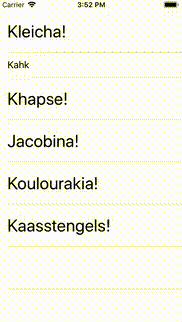

MMMArrayChanges Reference
MMMArrayChanges Reference
MMMArrayChanges


iOS library that helps finding (UITableView-compatible) differences between two arrays possibly having elements of different types.
(This is a part of MMMTemple suite of iOS libraries we use at MediaMonks.)
Installation
Podfile:
source 'https://github.com/mediamonks/MMMSpecs.git'
source 'https://github.com/CocoaPods/Specs.git'
# ...
pod 'MMMArrayChanges'
SPM:
.package(url: "https://github.com/mediamonks/MMMArrayChanges", .upToNextMajor(from: "1.1.0"))
Example
(See ./Tests/MMMArrayChangesTestCase.swift for a more complete example on diffUpdate() and the iOS project in ./Example on how to use MMMArrayChanges class to drive bulk animations of a UITableView.)

Imagine we are somewhere in a model representing a list of cookies updatable from a backend:
var items: [CookieModel] = []
And we’ve got our first ever update:
let apiResponse: [CookieFromAPI] = [
CookieFromAPI(id: 1, name: "Oreo"),
CookieFromAPI(id: 2, name: "Butter cookie"),
CookieFromAPI(id: 3, name: "Almond biscuit"),
// ...
]
Note that CookieModel objects in our list model are fat and provide lots of extra functionality, while our CookieFromAPI are plain and simple structures coming directly from the API layer.
We could recreate all our models and notify the observers of the whole list every time we get a new list from the API:
items = apiResponse.map { (plainCookie) -> CookieModel in
return CookieModel(apiModel: plainCookie)
}
However if almost nothing has changed in the list, then it would be nicer (performance-wise and very often visually), to nofity only the observers of updated cookies, like “Almond biscuit”‘s in this case:
let apiResponse2: [CookieFromAPI] = [
CookieFromAPI(id: 3, name: "Almond cake"), // <-- changed name
CookieFromAPI(id: 2, name: "Butter cookie"),
CookieFromAPI(id: 4, name: "Biscotti")
// ...
]
Simple map() would not be enough and we would need to figure our which cookies in our API response correspond to which cookies in our current list. We would also need to handle new cookies and the ones that are not in the list anymore. Also, in case such a list is also linked to a UITableView, then we would need to generate updates/animations without breaking it (something that’s quite hard to do in case of multi-item updates).
Enter MMMArrayChanges (ObjC-friendly and UITableView-compatible) or, for a simple Swift cases, a diffUpdate() extension on Array:
items.diffUpdate(
// We need to tell it how to match elements in the current and source arrays by providing IDs that can be compared.
elementId: { (cookie) -> String in
return cookie.id
},
sourceArray: apiResponse,
// We decided to use the same IDs that are used by the models, i.e. string ones.
sourceElementId: { plainCookie -> String in "\(plainCookie.id)" },
transform: { (apiModel) -> Cookie in
// Called for every plain API object that has no corresponding "thick" cookie model yet,
// i.e. for every new cookie. We create new "thick" models only for those.
return Cookie(apiModel: apiModel)
},
update: { (cookie, apiCookie) -> Bool in
// Called for every cookie model that still has a corresponding plain object in the API response.
// Let's update the fields we are interested in and notify observers only when needed.
return cookie.update(apiModel: apiCookie)
},
remove: { (cookie) in
// Called for all cookies that don't have matching plain objects in the backend response.
// Let's just mark them as removed just in case somebody holds a reference to them a bit longer than
// needed and might appreciate knowing that the object they hold is not in the main list anymore.
cookie.markAsRemoved()
}
)
Ready for liftoff? 🚀
We’re always looking for talent. Join one of the fastest-growing rocket ships in the business. Head over to our careers page for more info!